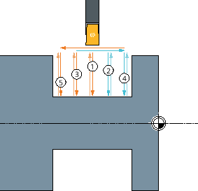
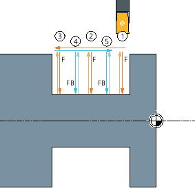

Function
You can use the "Groove" cycle to machine symmetrical and asymmetrical grooves on any straight contour elements.
You have the option of machining outer or inner grooves, longitudinally or transversely (face). Use the "Groove width" and "Groove depth" parameters to determine the shape of the groove. If a groove is wider than the active tool, it is machined in several cuts.
With alternate grooving, the tool is moved by a maximum of 80% of the tool width for each groove:
In the first comb grooving step (only groove 1), grooves are cut in the full material at regular intervals. The remaining ribs are then processed with a higher feed FB (feed for grooving). Machining begins on the reference point side:
| | Software option In order to use the "comb grooving" function, the "comb grooving" software option is required. |
The distance between the grooves made in the full material is calculated in such a way that the width of the remaining ribs is a maximum of 80% of the tool width. If the width of the plunge cutter less the tool radius is less than 80%, the radius is reduced correspondingly.
You can specify a finishing allowance for the groove base and the flanks; roughing is then performed down to this point.
The dwell time between recessing and retraction is stored in a setting data element.
| | Machine manufacturer Please also refer to the machine manufacturer's specifications. |